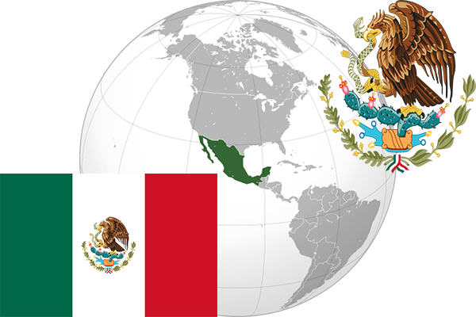

To`liq nomi: Meksika Qo’shma Shtatlari
Region: Shimoliy Amerika janubiy qismi
Qonunchilik shakli: Respublika
Mustaqillik kuni: 16-sentabr 1810-yil (Ispaniyadan)
Poytaxt: Mexiko
Maydoni: 1,972,550 km2
Chegaradosh davlatlari: AQSH,Gvatemala
Aholisi: 123,675,325 (2017-yil)
Aholi zichligi: 61/km2
Aholining o`rtacha yoshi: 76,3-yil
Rasmiy tili: Ispan
Dini: 83% katolik va boshqa dinlar
Pul birligi: Meksika peso
Telefon prefiksi: +52
Internet domen: .mx
Xalqaro tashkilotlarga a`zoligi: BMT,UNESCO
Dengiz va okeanlarga chiqishi: Meksika qo’ltig’i
YIM: Butun: $ 1,72 trln, Jon boshiga: $ 15 300
Yirik shaharlari: Mexiko, Monterrey, Gvadalaxara